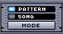
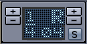
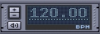
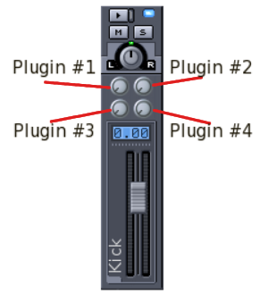
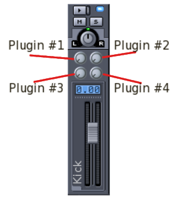

Resumen
Hydrogen es un sintetizador de software que puede usarse solo, emulando una caja de ritmos basado en patrones, o a través de un teclado MIDI/secuenciador de software. Hydrogen compila en Linux/x86 y Mac OS X, aunque este último aún es experimental, así que pregunta en la lista de correo de desarrolladores para más detalles.
Lista de figuras
- 1.1. The General Tab
- 1.2. La pestaña de Sistema de Audio
- 1.3. La pestaña de Sistema Midi
- 1.4. La pestaña de Apariencia
- 1.5. La pestaña de Motor de Audio
- 2.1. Barra de Herramientas Principal
- 2.2. El Editor de Canciones
- 2.3. Pattern Editor in Drum mode
- 2.4. Pattern Editor Controls
- 2.5. Pattern Editor in Piano mode
- 2.6. El Mezclador
- 2.7. Selecciona un Efecto
- 3.1. El Editor de Patrones
- 3.2. Insertar Notas en un Patrón
- 3.3. El Mezclador
Tabla de contenidos
You can download Hydrogen from http://www.hydrogen-music.org. On the 'Downloads' page you can find several binaries (installers) for Linux, Mac and Windows. (note that some versions may not be available for Windows and Mac)
If you want to compile Hydrogen yourself (see Sección 2), you can download the latest source files directly from our subversion server with:
$ svn co http://svn.assembla.com/svn/hydrogen/trunkA certain release can be fetched with:
$ svn co http://svn.assembla.com/svn/hydrogen/tags/0.9.5
La compilación de Hydrogen depende de las siguientes librerías:
qt (>= 4.0) en http://www.trolltech.com
libsndfile en http://www.mega-nerd.com/libsndfile/
ALSA (>= 1.x) en http://www.alsa-project.com (sólo si quieres usar ALSA como driver de audio)
Jack Audio Connection Kit (>= 0.80) en http://jackaudio.org/ (sólo si quieres usar JACK como driver de audio)
PortAudio en http://www.portaudio.com (sólo si quieres usar PortAudio como driver de audio)
Flac en http://flac.sf.net (sólo si quieres usar samples en flac)
ladspa en http://ladspa.org (sólo si quieres usar efectos ladspa)
liblrdf en http://liblrdf.sf.net (sólo si quieres usar lrdf para categorizar efectos)
lash en http://lash.nongnu.org (sólo si quieres usar lash)
Por favor instálalos con el gestor de paquetes de tu distribución. Si utilizas un sistema basado en debian, puedes instalar las librerías con:
$ apt-get install libqt4-dev g++ libasound2-dev \
libjack-dev liblrdf0-dev libflac++-dev libtar-dev libsndfile1-dev \
liblash-dev libportaudio-dev libportmidi-dev
Depending on the branch you are compiling you will need to use Scons or Cmake. Check the INSTALL.txt and the README.txt files for more info (located in the top level dir once you downloaded the sources).
Descomprime el tarball o ve al directorio donde se haya descargado la copia desde subversion:
$cd hydrogen-*$scons$su -c "scons install"
Antes de compilar, consulta más opciones con:
$ scons --help
Si quieres usar opciones que no están activadas por defecto (por ejemplo PortAudio), puedes activarlas con:
$ scons portaudio=1
Si encuentras algún error al ejecutar Hydrogen y quieres comunicarlo, acuérdate de configurar Hydrogen con:
$ scons debug=1
Para limpiar el código compilado:
$ scons -c
First of all you should make sure that the audio engine is configured properly. The preferences dialog can be accessed via the tools menu (tools -> preferences).
On the "General" tab (Figura 1.1) you can choose to automatically reopen the last used song and/or playlist. This can save you the trouble of having to reopen the song you are working on every time you open Hydrogen. Auto loading the playlist can come in handy when you are using Hydrogen live.
If you want to use Lash to manage your Jack connections you should enable it here so Hydrogen allows interaction with Lash.
The Beat Counter drift compensation and start offset allow you to compensate for system latency when you are using the Beat Counter function (see Sección 3.1)
The Max number of bars in a song can be set here (currently limited to 800) and if you want to use rubberband for sample time-streching you need to enter the path where rubberband is installed on you system here.
From the "Audio System" tab (Figura 1.2) it is possible to modify the audio driver being used (OSS, Jack, ALSA, PortAudio) with its buffer and sampling rate (unless you are using JACK, in this case the audio driver configuration should happen before starting the JACK server).
We can set some features of Hydrogen like "Create per-instrument outputs" this will create 1 output per instrument that you can connect to any other Jack enabled application. This can be useful if you want to add effects to a single instrument with jack-rack for example. "Connect to Default Output Pair" connects the output to the default ports: uncheck this if you want to connect the JACK output to other ports without having to disconnect them first.
Also keep an eye on the value of "Polyphony": depending on your CPU you may want to change the max simultaneous notes in order to prevent hydrogen from overrunning the audio driver.
Están disponibles los siguientes drivers:
jackd: El driver Jack es un servidor de audio profesional que permite una latencia muy baja e intercambios con otros software de audio. Recomendamos encarecidamente el uso de este driver para sacar lo mejor de Hydrogen. El servidor JACK arrancará automáticamente si no lo estaba ya.
ALSA: los drivers estándares de Linux ampliamente adoptados
OSS: The Oss audio driver uses /dev/dsp and it's based on the OSS interface which is supported by the vast majority of sound cards available for Linux; this said, the use of this audio driver blocks /dev/dsp until Hydrogen is closed i.e. unusable by any other software. Use it as last resort.
PortAudio: an open-source multi platform audio driver
CoreAudio: un driver para Mac OS X (experimental)
The "Midi System" tab (Figura 1.3) contains all MIDI settings. Here you can choose the MIDI driver, input, and channel(s) that Hydrogen should respond to. You can also define midi bindings: link a midi note/message to an action. To do this simply press the red 'REC' button left of the 'binding' action line. A popup will inform you that Hydrogen is waiting for your input. Press/hit/turn the key/pad/knob on your midi keyboard (or controller) that you want to link to this action. The popup will close and the Event Param value will now show the midi note value of the key you pressed. Once this is done you can select an Action from the action drop-down list. Note that some actions (like SELECT_NEXT_PATTERN) also require an Action Param that references the pattern you want to select with this midi action.
The "Appearance" tab (Figura 1.4) let's you modify Hydrogen look and feel (font settings and interface style). Also the VU meters fall-off speed of the Mixer Window can be changed here.
The "Audio Engine" tab (Figura 1.5) is a window that shows various stats about Hydrogen and the audio driver. In case JACK is used, buffer and sampling rate should be set before starting Hydrogen (JACK automatically starts when an application tries to connect).
Note that the Audio Engine tab is only available if Hydrogen was complied with debug support.
Tabla de contenidos
Antes de trabajar con Hydrogen, por favor familiarízate con estos archivos:
*.h2pattern: Archivo XML que describe un sólo patrón. Los patrones son conjuntos de golpes y se gestionan en el editor de patrones.
*.h2song: Archivo XML que describe la canción entera (o secuencia). Las canciones son conjuntos de patrones con sus propiedades y se gestionan utilizando el editor de canciones
*.h2playlist: XML file describing a playlist. A Playlist is a (ordered) group of songs.
*.h2drumkit: Una carpeta comprimida y archivada que contiene todos los samples de sonidos que componen un "drumkit" (una batería) y un archivo XML de descripción. Los drumkits son básicamente un conjunto de samples.
Proyectos: este menú ofrece funciones relacionados con archivos.
Nuevo - Crear una canción nueva
Mostrar Info - Configurar propiedades generales de la canción como el nombre, autor, licencia y notas genéricas
Abrir - Abrir una canción
Abrir Demo - Abrir una canción demo (las demos se guardan en $INSTALLPATH/share/hydrogen/data/demo_songs)
Abrir reciente - Abrir un menú mostrando las últimas canciones utilizadas
Guardar - Guardar cambios a la canción actual
Guardar como - Guardar canción actual especificando un nombre (ruta por defecto: $HOME/.hydrogen/data/songs)
Abrir patrón - Abrir un patrón guardado perteneciente al drumkit actual
Exportar patrón como - Guarda el patrón. Se guardará en $HOME/.hydrogen/data/patterns/nombre_drumkit
Exportar archivo MIDI - Exportar canción actual en formato MIDI
Exportar canción - Exportar canción actual en formato WAV
Salir - Salir de Hydrogen
Instrumentos: este menú ofrece funciones de instrumentos y drumkit (librerías de sonidos).
Añadir instrumento - Añade un nuevo instrumento a tu drumkit actual
Limpiar todo - Borra todos los instrumentos del drumkit actual
Guardar librería - Guarda todas las configuraciones de instrumentos (y sus samples) en $HOME/.hydrogen/data/nombre_librería
Exportar librería - Comprime todos los samples de instrumentos y configuraciones de un drumkit en $HOME/.hydrogen/data/nombre_librería
Importar librería - Importa otro drumkit del sistema local de archivos or descárgalo de una ubicación remota a través de un flujo XML. El archivo XML que debería suministrarse NO es compatible con RSS (ver Hydrogen website para un ejemplo). Para cargar otro drumkit en tu sesión actual de Hydrogen, lee Sección 7.
Tools: opens the mixer, the director, the playlist editor, the instrument rack and the general preferences window.
Editor de lista de reproducción - Una herramienta para gestionar listas de reproducción.
Director - Open the director window.
Mezclador - Abre la ventana del mezclador.
Rack de instrumentos - Abre el panel del rack de instrumentos.
Preferencias - Abre la ventana principal de preferencias. Lee Sección 3 para ver cómo configurar Hydrogen.
Debug: tools mainly for debugging and monitoring Hydrogen (only available when compiled with debug support !).
Mostrar info del motor de audio - Abre un monitor con varias estadísticas
acción de depuración - Inserta comandos de depuración.
Imprime objetos - Imprime el actual mapa de objetos en stdout.
Info
Manual del usuario - Abre una ventana con este manual :)
About - The usual window with license information, acknowledgements, etc.
Antes de analizar los dos marcos principales de Hydrogen, vamos a echar un rápido vistazo a la barra principal y sus componentes:
PIlota la canción usando inicio, parada, pausa, etc. botones
Escoge entre modo "patrón" o modo "canción": en modo "patrón", sólo se reproducirá el patrón seleccionado, mientras que en modo "canción", se reproducirán todos los patrones insertados.
Función avanzada para marcar el tempo (Tap Tempo): determina la longitud de nota y el número de notas a esperar antes de recalcular las PPM; luego pulsa la tecla de coma repetidamente hasta que aparece la letra 'R' y se actualizan las PPM. (ver Sección 3.1)
Fijar PPM manualmente
Gestionar transporte JACK
Abre el mezclador y los paneles del rack de instrumentos
Main controls to start [Hotkey = Spacebar], stop, record, fast forward, rewind, loop a song or a pattern.

Set Pattern/Song Mode. When Song mode is selected Hydrogen will play the complete song. This is the sequence of patterns you have created in the Song Editor (see Sección 4). When Pattern mode is selected Hydrogen will play the pattern that is currently selected, and thus displayed in the Pattern Editor (see Sección 5).

Set measure type and Beat Counter (see Sección 3.1).

Configuración de la velocidad de reproducción (rango: 30-400 ppm) [Tecla acceso rápido = rueda del ratón] y botón para activar/desactivar el metrónomo
Shows CPU load and MIDI events. The CPU bargraph gives you an indication of the CPU load. The MIDI led lights up every time Hydrogen receives a midi message.
Click J. TRANS to enable Jack transport. If the J. MASTER button is pressed Hydrogen will work as 'master', else it will act as 'slave' to another 'master' program (e.g. Ardour). This applet is only available if Jack Audio Driver is selected.
Es posible cambiar el tempo en cualquier momento utilizando las funciones de Tap Tempo y Contador de Pulsaciones de Hydrogen. Puedes cambiarlos durante la reproducción o con la canción parada. Para cambiar el tempo, pulsa la tecla , (coma) siguiendo un tempo para el número de pulsaciones en el compás. Cuando se realiza el número correcto de pulsaciones, el tempo cambiará al tempo medio que has pulsado. Si sigues pulsando, estas nuevas pulsaciones formarán parte de una media contínua. Si pulsas la tecla accidentalmente, o esperas demasiado entre pulsaciones, el contador de tempo empezará de nuevo.
El Tap Tempo es parte del Contador de Pulsaciones, que es esencialmente un Tap Tempo a lo bestia. Por defecto el Contador de Pulsaciones no está visible. Para ver el widget del Contador de Pulsaciones haz clic en el botón vertical (BC) entre el selector de modo Canción/Patrón y el widget de PPM. O se puede mostrar pulsando la tecla de coma (,).
El tempo que teclees se considerará como golpes pares del tipo de compás. El tipo de compás se puede fijar como 1/8 (para compases de ocho negras), 1/4 (para compases de cuatro negras), 1/2 (para compases de dos negras), y 1/1 (para compases de una blanca). Para cambiar el tipo de compás usa la tecla de flecha izquierda. Para contar el número de pulsaciones contadas, usa la tecla de flecha derecha. Puedes fijar de 2 a 16 pulsaciones. (Por ej. si fijas las pulsaciones en 6, tendrás que pulsar la tecla 6 veces antes de que compute y fije el nuevo tempo). Cuando la pantalla muestra una R, significa que el Contador de Pulsaciones está preparado para comenzar de 0. Cada vez que pulsas la tecla de coma, mostrará el número de pulsaciones que has realizado (1, 2, 3...).
El botón de la parte inferior derecha controla la función de auto-arranque, y cambia entre S y P. Cuando muestra la P de (Play), la canción fijará el nuevo tempo y automáticamente empezará a reproducir después de que pulses el número correcto de pulsaciones (si no está reproduciendo ya, claro). De este modo, si tienes el Contador de Pulsaciones fijado para 4/4, puedes pulsar 1-2-3-4, y comenzar a reproducir en el siguiente compás. Cuando muestra la S (de Set BPM), (fijar PPM) el auto-arranque está desactivado.
Por ejemplo: Supón que tienes una banda en directo, Hydrogen, y un sintetizador de software controlado por Seq24... y quieres que todos arranquen a la vez. Fija el tipo de compás en 1/4 y el número de golpes en 4. Activa el auto-arranque (el botón muestra una P). Cuenta 1-2-3-4 para la banda (dando a la tecla de coma) — y todos empiezan a la de 1.
Otro ejemplo: La misma situación, pero la canción no necesita de Hydrogen ni sintetizadores hasta más tarde. Durante ese tiempo, un humano (por ej. el guitarrista) fijará el tempo. En el compás antes de que Hydrogen debe tocar, pulsa la tecla de coma 1-2-3-4 con el ritmo... y entras en el siguiente compás (con el tempo correcto).
Si utilizas Transporte JACK, el Contador de Pulsaciones sigue funcionando. Si otro programa es el Maestro del Transporte JACK, Hydrogen responderá al cambio de tempo de esa aplicación. Nótese que en esta situación, Hydrogen funciona como esclavo, así que algunas funciones del Contador de Pulsaciones estarán desactivadas o no funcionarán correctamente. Si Hydrogen es el Maestro del Transporte JACK, los cambios de tempo de Hydrogen se verán reflejados en los demás programas (suponiendo que lo soportan).
Some of the settings to adjust the BeatCounter's latency compensation, are located on the General tab of the Preferences Dialog (see Sección 3.1 ). Here you will finde two spinboxes:
Compensación de desajuste del Contador de Pulsaciones en 1/10ms — ajusta esto para compensar la latencia entre el teclado y el programa.
Compensación para el inicio del Contador de Pulsaciones en ms — ajusta el tiempo entre el último golpe tecleado en el Contador de Pulsaciones y el momento en que se inicia la canción (si está activado el auto-arranque).
Nótese que estos valores pueden ser positivos (+) o negativos (-). Para encontrar valores útiles, tendrás que tomarte tu tiempo para hacer pruebas. Además, puede que requieras diferentes valores dependiendo de la velocidad de tu hardware, dispositivo de audio, drivers, etc. La utilización del Contador de Pulsaciones require práctica.
The "Song Editor" (Figura 2.2) gives an overview of the whole timeline of the song (e.g. intro, verse, bridge, chorus and so on); each blue colored square on this panel is a complete bar as shown in the underlying "Pattern Editor" panel. Here we have complete freedom to add, remove or move patterns in any order we prefer. We can also copy and paste patterns: use left mouse button to highlight an area and drag it around. Dragging with CTRL key pressed copies the patterns.
El Editor de Canciones viene con 7 botones:
 Borrar completamente todos los patrones (¡pide confirmación!).
Borrar completamente todos los patrones (¡pide confirmación!). Crear un patrón nuevo (y pide un nombre).
Mover el patrón seleccionado hacia arriba o abajo.
 Activar selección de patrones para copiar & pegar (Seleccionar Modo).
Activar selección de patrones para copiar & pegar (Seleccionar Modo).  Activar Modo Dibujo.
Activar Modo Dibujo. Cambiar de "Modo patrón único" a "Modo patrones apilados" y viceversa.
Debajo de estos botones hay una lista de patrones creados y cuándo se reproducirá cada uno (cada cuadrado == 1 compás). Haz clic en un cuadrado para añadir o quitar el patrón. Al pulsar el botón derecho del ratón sobre el nombre de un patrón, se mostrará un menú para cambiar el nombre del patrón o para copiar/borrarlo. No se permite más de un patrón con el mismo nombre.

Virtual patterns are a convenient way of grouping patterns together. For example, say you have a song in which three patterns are always played together at the start of each bar. Previously, the way to do this in the pattern matrix was to explicitly enable the three patterns at each bar.
With virtual patterns we can assign a pattern to be a sort of meta-pattern that implicitly invokes these three patterns together when the new virtual pattern is enabled in the pattern matrix. This way, we only need to set one pattern every bar, instead of three.
Virtual patterns provide a function that's similar to the regular pattern editor, and one could argue that since a virtual pattern is also a regular pattern, we could have just merged the three patterns into this new one. However, the advantage that virtual patterns provide is that if one of the original three patterns changes, the virtual pattern automatically inherits the change. A virtual pattern can also invoke other virtual patterns.
To access virtual patterns, right click (bring up the context menu) on the label of an existing pattern and there select “Virtual Pattern”. This will bring up a small dialog that allows one to toggle which patterns are in the virtual pattern set.
The "Pattern Editor" lets us create or modify the pattern (bar) which is currently selected. You can add/remove notes, and tune a number of per-note properties like velocity and pan. The Pattern Editor can be used in 2 modes : 'Drum' mode or 'Piano' mode. You can switch between these modes by clicking the Drum/Piano button (located on the top-right of the Pattern Editor)
First let's take a look at the (classic) 'Drum' mode :
The top part of the pattern editor contains a number of controls :
From left to right :
SIZE : lets you choose the size of the pattern (the number of bars)
RES : this is the current grid resolution (4 through 64)
Remember this constraint concerning the grid: if you are working with a resolution of 16 you can't go back to 8 and remove a 16th note. On the other hand if you are working with a resolution of 8 and you try to insert a note in the middle of two bars (looking for a 16 bars precision), notes will be placed in the previous or in the following 8th bar. This constraint can be removed if you disable the whole grid resolution (choose "off" from the grid resolution LCD control). Now you'll be able to place notes wherever you prefer.
HEAR : when enabled Hydrogen will play the sample as it's being added to the pattern.
QUANT : enables/disables quantization. When enabled the beats inserted will automatically respect the grid resolution currently applied.
Drumset / Instrument : when set to Drumset the keys on your midi keyboard will map to the instruments in your sound library as described in the instrument mapping table below. If you set it to Instrument the keys of your midi keyboard will trigger the instrument that is currently selected. The pitch of the instrument will follow the key you press on your keyboard. This feature is mainly used for non-drum instruments. An example : if you use a sample of a piano for one of your instruments, you will be able to 'play' that piano instrument using your keyboard just like you are playing a piano synth.
Note Length / Note off : these are 2 different ways to define the duration of a note. See Sección 5.3 for usage.
Drum/Piano : switch Pattern Editor between Drum and Piano mode. (see below)
The section on the left shows you what drumkit/library is currently selected (GMkit by default) and below that you can see the instruments that are part of this kit.
Each instrument has its own set of features that are accessible by right-clicking the instrument. From the context menu that pops up you can select
Clear notes : to remove all notes for this instrument in this pattern.
Fill notes : this allows you to fill up the pattern with notes for the selected instrument. Depending on the choice you make (fill all, fill 1/2, fill 1/4 ...) notes will be placed at all, 1/2, 1/4, etc of the note positions that are allowed by the grid setting. So be careful not to mix up the 'musical' 1/2-note and the 'fill 1/2' note.
Randomize velocity : automatically apply a pseudo-random velocity to each note of that instrument in the pattern. The more velocity you set on the instrument, the more hydrogen will hit “hard” on that instrument when played.
Delete Instrument : well, deletes the instrument ;-)
The small red and green buttons right of the instrument names are the “mute” (red) and “solo” (green) buttons.
The order of the instruments can be rearranged by simply dragging an instrument up/down in the list and dropping it on a new position within the drumkit/library. Doing so will not change anything to the sequence you have created for that instrument, nor will it change anything to the song or pattern you are working on. It will however, have an impact on the MIDI note mapping : in the table below you can find the link between the instrument position, the MIDI note and the qwerty keyboard keys.
Important Notes :
The name of the instrument depends on the drumkit that is loaded. This list below refers to the GMkit that is loaded by default.
Keep in mind that it is the position of the instrument (within the loaded drumkit) that is linked to a MIDI-note/keyboard-key and not the name of the instrument.

Here's a quick reference of the above bindings for your convenience.
This is where it all happens, this is where you can make music :-)
In this area you can see your selected pattern and add notes for any instrument. The simplest way to create a pattern is by adding notes using your mouse (and the 'Fill/Clear notes' function described above). Where you can add notes depends on the used pattern size and resolution.
If you are using Hydrogen as a pure 'drum' you just want Hydrogen to 'hit' the instrument wherever there's a 'dot' in the pattern. If you are using Hydrogen as an 'instrument', the length of the note becomes very important. There are 2 ways to define the length of a note : in 'Note Length' mode you can add a note by left-cliking, and you can 'stretch' that note by right-click-dragging it. This will change the dot into a rectangle that represents the duration of that note. In 'Note Off' mode you can also add a note by left-clicking, but a right-click will now add a blue dot that represents the end of that note.
(Figure above, from left >right : a 'normal' note, a note in 'note length' mode, a note in 'note off' mode)
So far we have only used the mouse to create a pattern, but you can also record your beats by clicking the Record button (see Sección 2) and simply playing your pattern on your MIDI drum or your pc keyboard (see instrument mapping above). This is probably a more musical way of creating a pattern, but it's up to you to decide what works best for you. (Also see Capítulo 3 for a basic walk-through of how the pattern editor works)
Clicking on an instrument or adding/removing a note next to it will select this instrument. Once an instrument is selected the note properties for this instrument will be shown in the form of vertical lines in the bottom window. The lines represent the value for the selected property of each note of the selected instrument. You can select another note-property from the note property drop-down list (located bottom-left). There are 4 note properties available :
Velocity : how hard the note is played (the volume of the note)
Note that the color of the note-dot and the vertical bar will change according to the velocity value you have defined. A light shade of gray means a low velocity (low volume) and the higher you set the velocity the darker the color will be, turning red when you reach the point of clipping.
Pan : with this parameter you can define the stereo image of the note (how loud it will be in the left/right output)
Lead/Lag : Lead and Lag allows a slight note lead or lag in respect of the actual beat. The range is ca. 5 ticks which equals around ca. 10 ms at a tempo of 120bpm. Changing the lead/lag can make a huge difference to the way your pattern sounds and feels. It's a groove thing ;-)
Notekey : if you select this note parameter the area where you can modify the parameter will change into a 'piano keyboard'
The striped black and white area represents a piano keyboard and in the gray area you can choose the octave. By placing a dot on the octave scale and a dot on the 'keyboard' you can choose any note.
Drum mode (see Figura 2.3) focuses on using Hydrogen as a drum machine. If you are using Hydrogen as an instrument there is a big chance that the Piano mode is for you. It gives you a complete 'piano keyboard' so you can easily put down your tunes.
You can compare the Piano mode to the Note properties Notekey (described above), only here you have a complete piano keyboard, so you dont have to select the octave first.
El marco del Mezclador (Figura 2.6) es útil para ajustar el volumen global o de un solo instrumento en el drumkit actual. Muestra el pico actual (haz clic en  para desactivarlo, útil para CPUs viejas) y te permite determinar el pico máximo permitido (ajústalo con el fader del instrumento), modificar atributos como paneo, reproducción solo , silencio o probar sólo ese instrumento ; al elegir un instrumento en el Editor de Patrones se enciende un LED azul (cerca del botón de reproducir). Cerca del control global de volumen, puedes configurar 3 efectos globales como swing (mueve algunas notas hacia atrás o adelante no aleatoriamente), tiempo (humaniza el tiempo de las notas) y humanizar (edita la intensidad aleatoriamente).
para desactivarlo, útil para CPUs viejas) y te permite determinar el pico máximo permitido (ajústalo con el fader del instrumento), modificar atributos como paneo, reproducción solo , silencio o probar sólo ese instrumento ; al elegir un instrumento en el Editor de Patrones se enciende un LED azul (cerca del botón de reproducir). Cerca del control global de volumen, puedes configurar 3 efectos globales como swing (mueve algunas notas hacia atrás o adelante no aleatoriamente), tiempo (humaniza el tiempo de las notas) y humanizar (edita la intensidad aleatoriamente).
Además, puedes configurar hasta 4 efectos especiales LADSPA para cada instrumento pulsando el botón de . Consulta la siguiente sección para una descripción detallada.

La Biblioteca de Sonidos te ahorra tiempo al gestionar tus drumkits, patrones favoritos y canciones favoritas. Al hacer nuevas canciones y drumkits, la Biblioteca de Sonidos te facilita el reutilizar y mezclar los instrumentos y patrones de otros drumkits y patrones.
Esto enumera los drumkits instalados por tu administrador de sistemas. Se determina mediante el prefijo de tiempo de compilación (compile-time). En sistemas operativos tipo Unix, esto normalmente es /usr/share/hydrogen/data/drumkits, o posiblemente /usr/local/share/hydrogen/data/drumkits. Estos drumkits están disponibles para cualquier usuario, y éstos normalmente no pueden hacer añadidos.
Para cargar un drumkit desde aquí, haz clic derecho sobre el drumkit y selecciona . Esto reemplazará el drumkit actual con el que has seleccionado. Para cargar sólo un instrumento de ese drumkit, haz clic izquierdo sobre el a la izquierda del nombre del drumkit para mostrar todos los instrumentos. Con el botón izquierdo del ratón, haz clic y arrastra los instrumentos al drumkit actual. El instrumento se añadirá al drumkit que tienes cargado actualmente.
Estos son tus propios drumkits que puedes gestionar tú mismo. Normalmente se guardan en $HOME/.hydrogen/data/drumkits. Cuando estás creando un nuevo drumkit, puedes guardarlo aquí seleccionando → .
El procedimiento para cargar drumkits e instrumentos es el mismo que para los drumkits del sistema (ver Sección 7.1).
Antes de guardar tus patrones en la biblioteca de sonidos asegúrate de editar sus propiedades haciendo clic derecho y seleccionando . Aquí puedes asignar un título y una categoría al patrón. Puedes utilizar una de las categorías ya proporcionadas, o crear tu propia categoría simplemente tecleando un nombre de categoría. El nombre de la categoría es importante, porque los patrones se archivarán por categorías en la Biblioteca de Sonidos.
Puedes guardar tus patrones favoritos en la biblioteca de sonidos haciendo clic derecho sobre el título del patrón en el editor de canciones y seleccionando . Aparecerá en la Biblioteca de Sonidos bajo Patrones y la categoría que has asignado al patrón.
La creación de un nuevo drumkit con Hydrogen se realiza con el Editor de Instrumentos. Usando el editor de instrumentos puedes cargar samples, configurar parámetros de la envolvente (envelope), configurar la ganancia (gain), y algunas funciones avanzadas más como grupos de silencio (mute groups), filtro de resonancia low-pass (low-pass resonance filter) y altura tonal aleatoria (pitch randomization).
En lugar de crear tu propio drumkit, también puedes utilizar or descargar drumkits existentes utilizando Sección 7.
El sintetizador de Hydrogen es un sintetizador basado en samples. Un sample es un trozo de audio pregrabado (normalmente entre .1 seg. y 3 seg.). Para reproducir una nota, el sample simplemente se reproduce en el momento preciso. Existen algunos conceptos y términos que deberás entender a la hora de confeccionar un drumkit. (Ver Glosario para una explicación más detallada.)
Términos del Sintetizador de Samples
- Sample
Una corta grabación de un sonido, típicamente con entre .1 y 3.0 segundos de duración.
- Ganancia (Gain)
Ajuste de volumen.
- Intensidad
La fuerza con la que golpeas una nota.
- ADSR Envelope Generator (Generador de Envolventes ADSR)
Un generador de envolventes de Attack (Ataque)/Decay (Decaimiento)/Sustain/Release. Tras disparar una nota, Hydrogen atacará la nota incrementando su volumen de 0 hasta la plena intensidad de la nota. Tras llegar a la máxima intensidad, decaerá la nota bajando el volumen hasta que alcanza el nivel del sustain. Cuando la nota se suelta, (release) Hydrogen vuelve a reducir el volumen desde el nivel de sustain hasta 0.
- Attack (Ataque)
La cantidad de tiempo para ir de 0 hasta la intensidad máxima.
- Decay (decaimiento)
La cantidad de tiempo para ir de la intensidad máxima al volumen de sustain.
- Sustain
El nivel (el volumen) en el que la nota se sostiene entre el sustain y el release. Es un porcentaje de la intensidad. No depende del tiempo.
- Release
La cantidad de tiempo para ir del volumen de sustain de vuelta a 0.
Los samples típicos utilizados en Hydrogen son: el sonido de un golpe simple de batería, el sonido de un golpe simple de plato, el sonido de un golpe simple de cencerro. Cuando metes una nota en el patrón (o reproduces una nota usando MIDI), Hydrogen reproducirá el sonido que hayas cargado. Así que para crear un drumkit tienes que reunir grabaciones cortas del bombo, cada tom, cada plato, el hi hat abierto, el hi hat cerrado, la caja (con bordonero y sin bordonero), golpes del borde, etc.
Sin embargo, no hay reglas en cuanto a qué puede ser un sample. Es común utilizar Hydrogen para disparar sonidos que no son de batería, tales como: clips de audio de personas hablando, un clip de una canción, efectos de sonido, clips de audio de películas, personas famosas hablando. ¡Se creativo!
Para empezar con un nuevo drumkit de cero, selecciona → . Esto te deja un banco de 32 instrumentos vacíos. Para borrar instrumentos, haz clic derecho sobre cada instrumento y selecciona . Para añadir más instrumentos, selecciona → .
Selecciona un instrumento para empezar a editarlo. Esto se hace haciendo clic izquierdo sobre el nombre del instrumento en la lista de instrumentos (a la izquierda). Verás que el nombre del instrumento en el Editor de Instrumentos coincide con el que has seleccionado.
Cuando el drumkit funciona tal como querías, selecciona → . Te pedirá que le des un nombre al drumkit para guardarlo. Si quieres sobreescribir un drumkit ya existente, tendrás que teclear el mismo nombre que el kit que quieres reemplazar.
Los drumkits se archivan automáticamente en el directorio data (por ej. $HOME/data/drumkits).
Para exportar un drumkit (para compartirlo con otros), hay que cargarlo primero en la Biblioteca de Sonidos. Después, selecciona → en el menú. Selecciona el drumkit que deseas exportar y dale un nombre de archivo para guardarlo.
Para cada instrumento en un drumkit, puedes cargar varios samples y configurar diferentes parámetros del sintetizador. Esta sección te ayudará paso a paso para crear un nuevo instrumento y cargar los samples.
Para empezar a crear un instrumento, selecciona → . Esto te da un instrumento en blanco para comenzar.
Ahora, necesitas dos samples. Cualquier archivo .WAV o .FLAC servirá. Hydrogen proporciona varios en el directorio data/drumkits .
En el editor de instrumentos, haz clic en . Puedes cargar varias capas en el instrumento. Cuál se reproduce depende de la intensidad de la nota entrante. Haz clic en y dirige el a tu sample. Fíjate que el te permitirá una vista previa del sample antes de cargarlo. También te permitirá cargar más de un sample a la vez. Pero por ahora, sólo carga uno.
Tras cargar el sample, verás que ahora hay un 1 arriba, y que el rectángulo de más arriba se ha vuelto azul claro. Para cargar un segundo sample, haz clic en la ranura justo debajo, y luego haz clic en para meter otro sample.
Tras insertar los dos samples, probablemente verás que sólo el primer sample se reproduce cuando disparas el instrumento. Esto es porque tienes que configurar los rangos de intensidad para las capas. Mueve el ratón hacia los laterales de los rectángulos azul claro y verás que sale un cursor para arrastrar hacia la derecha o la izquierda. Ahora arrastra el sample hacia la derecha o la izquierda (como una cortina). Ahora verás cómo aparece la Capa 2.
La configuración de intensidad para la capa es intensidad-0 a la izquierda, e intensidad máxima a la derecha. Configura la Capa 1 para las notas suaves y la Capa 2 para las notas fuertes. (Por ej. la Capa 1 a la izquierda y la Capa 2 a la derecha).
Ahora, en la zona de patrones, configura un patrón simple que reproduce este instrumento. Ajusta las configuraciones de intensidad en cada nota para que puedan sonar los diferentes samples. Ahora pon el patrón en modo bucle y notarás la diferencia entre los samples. (Para aprender sobre cómo editar un patrón, consulta Sección 5)
Para cada capa puedes configurar la y la . La altura tonal también tiene un ajuste .
Usa el ajuste de para controlar el volumen del sample. Esto es necesario porque es muy difícil tener un conjunto de samples que suenen al mismo volumen. Al ajustar esto, los samples que estaban grabados demasiado bajo se pueden subir para igualarlos a los samples altos (que has tenido que bajar).
Aviso
Es muy fácil poner el mando de demasiado alto, haciendo que el sample quede clipeado (distorsionado). Acuérdate de probar la ganancia con notas de intensidad máxima. Si aquí se te clipea la señal, seguramente empeorará según lo procesa Hydrogen.
La altura tonal (pitch) del sample se puede modificar con los controles correspondientes. El mando de ajusta la altura tonal en semitonos. (Así que -12 baja 1 octava). El mando a la derecha ajusta la altura ±50 cents. (Un semitono son 100 cents.)
Nota
La altura se ajusta reproduciendo el sample más rápido o más despacio. Esto se llama el Efecto Doppler. Así que si tienes un sample de 1 segundo y lo bajas -12 (1 octava), tu sample sólo durará 0.5-segundoss.
En el editor de instrumentos, haz clic en el botón . Aquí puedes configurar varios parámetros que son para el instrumento en su conjunto (no para cada capa). Los parámetros que puedes configurar son:
Parámetros de la envolvente (envelope): , , , . (Ver Generador de la Envolvente (Envelope Generator))
: El volumen general del instrumento.
: El grupo de silencio al que pertenece este instrumento (ver Grupo de Silencio (Mute Group)).
Parámetros de Filtro: ass), , .
Es importante que entiendas Sección 8.1 para poder continuar.
Cuando se dispara el instrumento, su volumen pasa por una Envolvente ADSR (de aquí en adelante, ADSR envelope). Los parámetros funcionan de la siguiente manera:
Attack — the amount of time that the volume of the sample goes from 0 to the full velocity of the note. If the value is 0, the sample will play immediately at full velocity. If the value is 1.0, the sample volume will use the maximum time available for the attack parameter. [1]
Decay — la cantidad de tiempo para que el volumen del sample baje de la intensidad máxima hasta el volumen de sustain. Si el valor es 0, el sample inmediatamente saltará del volumen de attack al volumen de sustain. Si el valor es 1, el volumen del sample utilizará el máximo tiempo disponible para el parámetro de decay.[1]
Sustain — el volumen reproducido para la nota tras terminar la fase de decay, y hasta que la nota se "libera" (release). Si se configura a 0, la nota estará silenciada. Si se configura a 1.0, la nota sonará a la intensidad máxima.
Release — el tiempo necesario para apagar la nota desde el volumen de sustain hasta 0 (silencio). Si se deja en 0, la nota se silenciará en el tiempo mínimo (unos 5 ms). Si se deja en 1, se reducirá en el tiempo máximo disponible.[1]
Si el sample es más corto que los tiempos especificados, terminará sin importar la fase de ADSR en el que se encuentre. Si la nota es sostenida, no silenciará la nota mientras lo sostengas. Sólo sostiene el parámetro de ganancia (volumen) durante ese tiempo.
La ganancia determina el volumen general del sample. Esta ganancia se aplica después de la ganancia que has configurado para la capa, y antes de la ganancia configurada para el mezclador. Con la ganancia a 0, el instrumento estará silenciado. Con la ganancia a 1.0, el volumen de los samples no se ajustará (por ej. 0 dB). Si la ganancia se configura a más, los samples se amplificarán.
Aviso
Es muy fácil poner el mando de demasiado alto, haciendo que el sample quede clipeado (distorsionado). Acuérdate de probar la ganancia con notas de intensidad máxima. Si aquí se te clipea la señal, seguramente empeorará según lo procesa Hydrogen.
Hydrogen proporciona más grupos de silencio de los necesitarás jamás (más de 256). Un grupo de silencio es un agrupamiento de instrumentos que son mútuamente exclusivos — sólo puede sonar un instrumento en un momento dado. Si un instrumento está sonando y otro del grupo se dispara, el primero se silenciará inmediatamente y sonará el segundo instrumento. Esto es útil sobre todo para instrumentos como el hi hat, donde el sonido abierto y el cerrado son instrumentos diferentes.
Si el grupo de silencio está en Off, el instrumento no forma parte de ningún grupo. Si se especifica un número, entonces el instrumento pertenece al grupo denominado con ese número. Para meter otros instrumentos en el mismo grupo, configura el parámetro del grupo de silencio con el mismo número. (Por ejemplo, para agrupar todos los hi hats, puedes configurar el parámetro del grupo de silencio de todos ellos en el 1. Para tener un grupo de silencio para la caja, configura su parámetro para utilizar el 2.)
El filtro es un low-pass resonance filter. Si no deseas usarlo, haz clic en el botón de para que se ponga rojo. Si no está rojo el filtro se encuentra activo. El parámetro de corte (cutoff) determina la frecuencia de corte para el filtro. El parámetro de resonancia determina cuánta resonancia tiene la frecuencia de corte. Si la resonancia se deja en 0, el filtro no es más que un simple low-pass filter.
Nota
La frecuencia de corte del filtro varía con la tasa de muestreo de tu tarjeta de sonido. El rango del mando (0 a 1.0) está optimizado para una tasa de muestreo de 48,000 kHz.
The random pitch parameter allows you to randomly vary the pitch of the sample every time it is triggered. The value is set between 0 and 1.0. The pitch change is fairly small: ±2 half-steps × value. Using this sparingly can help your sequences to sound more like a real drummer.
Con todos los parámetros que hay disponibles, puede resultar difícil conseguir algo que suene bien cuando acabes. Aquí van algunos consejos para configurar un instrumento:
Baja la ganancia. Cada vez que tienes un control de ganancia (por ej. un amplificador), esto se llama una etapa de potencia. Con cada etapa de potencia adicional que tengas, es fácil que satures la señal — lo cual significa que la señal se distorsiona debido al clipeo. Además, si tienes dos samples que, por sí solos, ya llegan al límite — ¿qué crees que pasará cuando los combines? Está claro, vuelves a saturar la señal.
Si las cosas suenan mal y distorsionadas, empieza por bajar la ganancia de la capa... sobre todo si es mayor de 1.0. Luego baja la ganancia del instrumento. Luego cualquier ganancia de los efectos LADSPA. Luego el fader del mezclador. Luego el fader de la salida master.
Prueba los samples a la máxima intensidad. El sample sonará más alto si la intensidad es mayor. Así que si lo configuras todo para que suene bien con una intensidad de 0.7, ¿qué pasará cuando tengas una intensidad máxima de 1.0? (Una pista: saturación.)
Intenta usar samples con -6 dB máx. Visualmente, esto son samples que llegan a su pico máximo sólo a la mitad del rango completo. Si no, deja la ganancia en aproximadamente 0.5.
Quita todas las desviaciones de CD (DC offset) del sample. En un editor simple de samples, normalmente hay una línea que atraviesa el centro de la onda. Esta es la línea "cero". El inicio de tu sample debería de estar sobre esta línea. El final del sample también debería de estar sobre esta línea. Sin embargo, si la señal está un poco por encima o debajo de esta línea, oirás un 'clic' al comienzo y al final del sample cada vez que sea reproducido. Si tu editor de samples no tiene herramientas para arreglar un problema de desviación de CD, puedes eliminarlo poniendo un ligero fundido de entrada y salida en los extremos del sample.
El ADSR no será más largo que tu sample. Si tienes un sample corto, no importa cómo configures el attack y el delay — el sample dejará de reproducirse.
Las cosas cambian con la tasa de muestreo. Si tienes una configuración realmente buena con todos los parámetros ajustados con esmero... las cosas cambiarán si modificas la tasa de muestreo de tu tarjeta de sonido. Muchas de las funcionalidades y los parámetros internos de Hydrogen están basados en el número de samples que procesa, y no en el número de segundos. El tipo de cosas que cambian son: cualquier cosa basada en el tiempo (como el attack y el release) y cualquier cosa basada en la frecuencia (como la frecuencia de corte).
Hydrogen también puede añadir efectos a los sonidos usando cualquier librería de efectos LADSPA. Tienes que instalar las fuentes de LADSPA (disponibles en http://www.ladspa.org) y mientras que esto te ofrece una idea aproximada de cómo funciona, en realidad deberías probarlo de verdad instalándote una o más librerías de plugins, que es tan simple como scons && scons install. Estos son algunos sitios donde puedes descargarte librerías de plugins:
SWH-Plugins disponibles en http://plugin.org.uk. Antes de compilar estos plugins necesitas el tarball FFTW de http://www.fftw.org.
CMT disponible en http://www.ladspa.org.
TAP disponible en http://tap-plugins.sf.net.
Los Plugins Matan
A LADSPA plugin is compiled, executable code. It is capable of hanging, crashing, freezing, screeching, overflowing buffers, and even phoning home. If you start having issues with Hydrogen, disable your plugins and see if things improve. Some plugins are not designed for real-time use, and some are just plain better than others.
Una vez que has instalado algunos plugins abre una canción a la que quieres añadir un efecto y selecciona un instrumento que tiene unos cuantos golpes en el patrón. En el mezclador haz clic en y selecciona una de las líneas disponibles para plugins. Haz clic en el botón de Editar (  ), luego en “Seleccionar el Efecto”: esto abrirá otra ventana (Figura 2.7) que te permitirá elegir un efecto de entre los que tienes instalados, que están ordenados alfabéticamente y por categorías. Cuando acabes, ajusta el nivel en el mezclador y empieza a tocar. Cada control redondo en la parte de efectos (FX) controla el nivel del efecto correspondiente.  Si quieres activar/desactivar rápidamente el efecto, haz clic en el botón de Bypass ( ).
), luego en “Seleccionar el Efecto”: esto abrirá otra ventana (Figura 2.7) que te permitirá elegir un efecto de entre los que tienes instalados, que están ordenados alfabéticamente y por categorías. Cuando acabes, ajusta el nivel en el mezclador y empieza a tocar. Cada control redondo en la parte de efectos (FX) controla el nivel del efecto correspondiente.  Si quieres activar/desactivar rápidamente el efecto, haz clic en el botón de Bypass ( ).

[1] Los parámetros de ataque, decaimiento (decay) y release ("liberación") están determinados por el número de samples de audio. Esto significa que los cambios de tiempo dependen de la tasa de muestreo de tu tarjeta de sonido. El tiempo máximo para cada uno de ellos es de 100,000 samples de audio (normalmente 2.27 seg a 44.1 kHz).
Tabla de contenidos
Esto no es más que una guía rápida de Hydrogen. Consulta el tutorial para una descripción más detallada.
Hydrogen has 2 main modes: "Pattern" mode and "Song" mode (refer to Sección 3 for the buttons to activate). When "Pattern" mode is activated the current pattern is continuously repeated. This mode is very well suited to tweak your pattern untill it's just right, since the pattern you are working on is constantly repeated. This way you can immediately hear the changes you have made. In "Song" mode the whole song is played. This is useful when putting together the patterns, to create the structure of the song.
We'll start from an empty song with an empty pattern, as created by default: "pattern" mode should be selected now. It is also possible to change name of the pattern. Now let's click on the “Play” button and while the pattern is playing let's add notes in the grid of the Song Editor (Figura 3.1) simply left_mouse_clicking on it: adjust grid resolution and BPM speed if needed. Remember some constraints of the grid: if you are working with a resolution of 16 you can't go back to 8 and remove a 16th note; same thing happens if you are working with a resolution of 8 and you try to insert a note in the middle of two bars (looking for a 16 bars precision): they will be placed on the previous or on the following 8th bar (unless you choose “off” from the Grid Resolution LCD, in this case you're free to place notes wherever you prefer). Be sure to select the correct pattern in the Song Editor before adding notes in the Pattern Editor!
Una vez que hemos creado los patrones (Figura 3.2), podemos copiar/pegar/eliminarlos simplemente arrastrándolos con el ratón (activa 'modo selección' en el Editor de Canciones y mantén pulsado el botón izquierdo del ratón para seleccionar los que quieres mover o copiar).
Por supuesto siempre podemos utilizar la ventana del mezclador, bien a la hora de crear o reproducir patrones.
The Mixer frame (Figura 3.3) is made of 32 independent tracks, each of these is binded to an instrument, plus a "Master Output" line to adjust general output volume and a "FX" button to set effects. Every line features 3 buttons ( ), pan adjust ( ), current maximum peak, volume fader and name of the track. Clicking on will play the selected instrument, cutting the others. The "Mute" button , simply mute that instrument. The maximum peak indicates the maximum volume reached from the instrument; the peak must be in a range of 0.0 and 1.0 (in Figura 3.3 you can see a few volumes too loud), otherwise it will get distorted producing a weird sound (especially with OSS audio driver), in this case it's better to set volume down; keep an eye on each vu-meter.
[CTRL + N] = New Project
[CTRL + O] = Abrir Archivo
[CTRL + D] = Open Demo
[CTRL + S] = Guardar Archivo
[CTRL + SHIFT + S] = Save File as
[CTRL + P] = Export Pattern as
[CTRL + M] = Export MIDI file
[CTRL + E] = Export Song
[CTRL + Q] = Quit Hydrogen
[ALT + B] = Show Director window
[ALT + M] = Show Mixer window
[ALT + I] = Show Instrument rack
[ALT + P] = Show Preferences window
[CTRL + ?] = Show manual
[Retroceso] = Volver al principio de una canción o un patrón
[spacebar] = Play / Pause
[,] (comma key) = Tap tempo (beatcounter)
Esto es un glosario de términos generales que se encuentran al utilizar Hydrogen, sintetizadores, baterías o samplers. Las definiciones del texto están simplificadas, pero las definiciones aquí son más generales y están más explicadas. Por ejemplo, el texto del manual te llevaría a creer que un ADSR es el único tipo de generador de envolventes (envelope generator), y que sólo controla el volumen. Mientras que sirve para nuevos usuarios, no es del todo correcto.
- ADSR
Un tipo de generador de envolventes que te permite controlar los parámetros de Attack, Decay, Sustain, y Release. Generalmente, los parámetros son proporcionales a la intensidad.
En Hydrogen, el 'ADSR envelope generator' sólo controla el volumen (atenuación).
Lee más sobre esto en el Artículo de Wikipedia (en inglés) ADSR Envelope
Ver también Generador de la Envolvente (Envelope Generator), Attack, Decay, Sustain, Liberación (Release).
- Attack
Esta es la primera fase de un 'ADSR envelope', y es la cantidad de tiempo necesario para subir el parámetro de 0 a la máxima intensidad tras disparar la nota.
Ver también ADSR.
- Atenuación
En filtros y mezcladores, esto es la reducción de la señal (volumen).
Ver también Roll-off.
- Band-Pass Filter
A filter that preserves a certain band of frequencies, and attenuates (silences) all others. This is often done by combining a high-pass and a low-pass filter.
Ver también Filtro, Filtro 'High-Pass', Filtro Low-Pass.
- Saturación (Clipping)
Un fenómeno que afecta a una señal cuando es demasiado grande para lo que sea que lo recibe. Los picos de la señal (que normalmente son curvas redondeadas) se cortan al máximo volumen (clipeados). Esto distorsiona el sonido y normalmente no es deseable.
Un ejemplo de saturación es cuando reproduces música a un volumen mayor de lo que puede soportar el altavoz. Algunas partes de la música suenan desgarradas y borrosas.
- Frecuencia de Corte (Cutoff Frequency)
En los filtros high-pass y low-pass, esta es la frecuencia que divide entre entre aquellas que pasan, y aquellas que se atenúan (silenciadas). En un filtro de 'high-pass resonance', o uno de 'low-pass resonance', el corte es también la zona de frecuencias que se amplifican.
Por ejemplo, si tienes un filtro low-pass y configuras una frecuencia de corte alta (por ej. 20kHz)... el filtro no afectará al sonido. Todas las frecuencias audibles pasarán sin modificarse. Al bajar la frecuencia de corte a algo como 40 Hz (la cuerda gruesa de un bajo), suena como si alguien tapara el altavoz con una manta. Las frecuencias altas se están atenuando por encima de los 30 Hz.
Ver también Filtro, Filtro 'High-Pass', Filtro Low-Pass, Filtro de Resonancia.
- Decay
Tras alcanzar la máxima intensidad del 'attack', esto es la cantidad de tiempo necesario para bajar el parámetro hasta el nivel del sustain.
Ver también ADSR.
- Generador de la Envolvente (Envelope Generator)
Una manera de controlar (cambiar) un parámetro a lo largo del tiempo como respuesta al disparo, sostenimiento y liberación de una nota.
¿Se te acaba de nublar la vista? Intentémoslo de nuevo:
Imagina que estás tocando una nota en el teclado y tienes la otra mano en un mando (volumen, filtro de corte, etc.). Según tocas la nota, giras e mando (hacia arriba, luego abajo... o viceversa). Haces lo mismo con cada nota. Esto es lo que hace el 'envelope generator'. Consulta también ADSR
- Fader
Un control deslizante utilizado para ajustar la atenuación (volumen) en un mezclador. Los faders siempre tienen un potenciómetro de "audio", lo que significa que los cambios de atenuación tienen lugar en una escala exponencial.
- Filtro
Un dispositivo que cambia un sonido atenuando frecuencias específicas. Un control de tono es un ejemplo de un filtro simple de 'low pass'.
Ver también Band-Pass Filter, Filtro 'High-Pass', Filtro Low-Pass, Filtro de Resonancia.
- Ganancia
En un amplificador, determina cuánto se amplifica una señal (volumen). A mayor valor de ganancia, más volumen.
- Filtro 'High-Pass'
Un filtro que atenúa (silencia) frecuencias bajas, pero que permite el paso de frecuencias altas.
Ver también Filtro, Frecuencia de Corte (Cutoff Frequency).
- Instrumento
En Hydrogen, un instrumento es un único generador de ruido (como puede ser un bombo o un tom).
- Capa
En un instrumento, puedes cargar varios samples diferentes capa), y hacer que suene un sample diferente dependiendo de la intensidad de la nota. Sólo sonará un sample a la vez.
Supón que tienes un sample de un golpe suave de timbal base. Si simplemente reproduces el sample más alto — no sonará igual que un golpe fuerte en un tom de verdad. Si quieres imitar esto en tu instrumento, puedes cargar un sample par los golpes suaves, y otro sample para los fuertes.
Ver también Instrumento.
- Filtro Low-Pass
A filter that attenuates (silences) high frequencies, but allows low frequencies to pass through.
Ver también Filtro, Frecuencia de Corte (Cutoff Frequency).
- Silencio (Mute)
Para no hacer sonido. Una función del instrumento que evita cualquier salida de audio.
- Grupo de Silencio (Mute Group)
Un grupo de instrumentos (samples) que debería silenciarse inmediatamente cuando se dispara otro instrumento del mismo grupo.
Esto se utiliza normalmente para los hi-hats, donde hay un instrumento (sample) diferente para cuando está abierto y cerrado. Con un hi-hat real, el sonido abierto parará en cuanto lo cierres. Sin embargo, si utilizas dos samples — el sonido de abierto continuará aún después de disparar el sonido de cerrado. Al colocar ambos instrumentos en el mismo grupo (grupo #1, por ejemplo)... al disparar el sonido de cerrado el de abierto se parará automáticamente (y vice versa).
- Octava
Un rango de frecuencias donde la más alta es exáctamente el doble de la más baja.
Por ejemplo, el rango de 20 Hz a 40 Hz es una octava. Como lo es de 120 Hz a 240 Hz, y de 575 Hz a 1150 Hz. Mientras que las diferencias de frecuencia son muy variadas (20 Hz, 120 Hz, y 575 Hz, respectivamente), para el oído humano suenan como si les separara la misma distancia.
- Liberación (Release)
Tras soltar/liberar la nota, esto es la cantidad de tiempo necesario para reducir el parámetro del nivel de sustain a 0.
Ver también ADSR.
- Resonancia
Al referirnos al filtro de resonancia, esto es el parámetro que determina cuánta ganancia se da a las frecuencias en el corte.
Ver también Filtro de Resonancia.
- Filtro de Resonancia
Un filtro que amplifica un estrecho rango de frecuencias. Típicamente formará parte de un filtro high-pass o low-pass, donde las frecuencias amplificadas se centran en la frecuencia de corte.
Ver también Filtro, Frecuencia de Corte (Cutoff Frequency), Resonancia.
- Roll-off
Esta es la cantidad de atenuación (supresión) aplicada a las frecuencias según cambia la frecuencia (normalmente medido en dB/octava).
For example, in a low-pass filter the frequencies below the cutoff frequency are not attenuated (they pass-through with the same volume). Same with the cutoff frequency. As you go above the cutoff frequency, the frequencies that are near the cutoff frequency are not attenuated very much at all. However, the frequencies that are much higher than the cutoff are attenuated (suppressed) a lot. This is usually approximated by a straight line (on a log scale) and measured in in dB of attenuation per octave of frequency.
Ver también Atenuación, Filtro.
- Sample
Una corta grabación de un sonido, típicamente con entre .1 y 3.0 segundos de duración.
- Sustain
El nivel en el que se sostiene el parámetro tras terminar el tiempo de decay. Este nivel se mantendrá hasta que la nota se suelta.
Ver también ADSR.
- Intensidad
La fuerza con la que golpeas una nota.
Los dispositivos MIDI deben enviar esta información junto con la nota. Los sintetizadores utilizan esta información para ajustar varios parámetros en el sample (normalmente el volumen). En Hydrogen, sólo se utiliza para determinar el volumen al que se reproduce el sample.